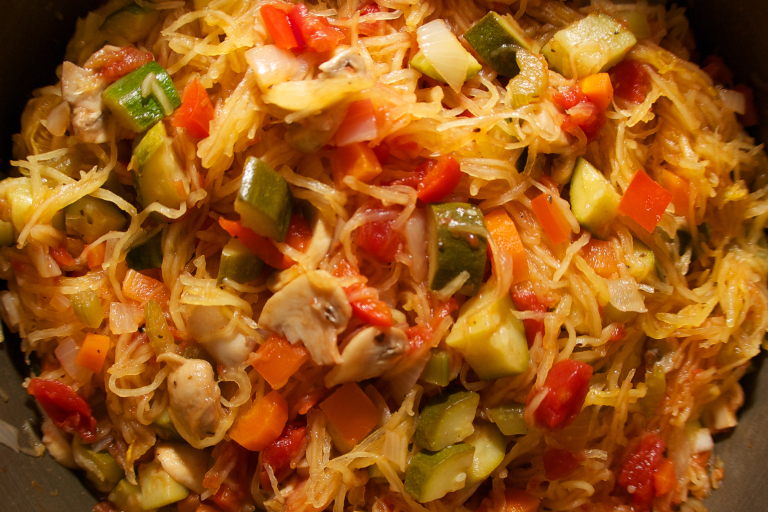

-

Chicken Salad
This is a delicious chicken salad with a hint of tart from the Granny Smith apples and sweet from the cranberries. Delicious served on toasted gluten free bread or with gluten free pretzles.
-

No Bake Chocolate Oatmeal Cookies
This is an easy and quick recipe to whip up and works great on days that are too hot to turn on the oven.
-

Spaghetti Squash Primavera
Full of flavor but not gluten, this dish gets rid of my spaghetti craving with the texture of the baked squash.
-

Zucchini Boats
With the onset of summer comes a plethra of zucchinis. This is a delicious and filling way to use some of the beautiful zucchini from your backyard garden or the local farmer's market.
-

Zucchini Soup
I love this creamy soup full of flavor but not the dairy.